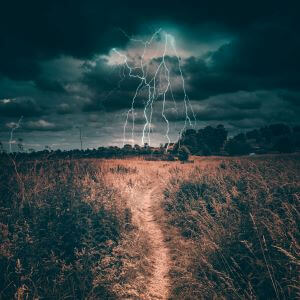

Spring Flowers are Blooming
Time to get your hiking boots on because the Spring lowland flowers are blooming, and they won’t last long. As you climb the trails up to Sherman Peak, be sure to watch out for the beautiful blue blooms of Beardtongue (try saying that 5 times fast). The deep blue-purple blossoms grow up the stem, which can grow as high as two feet.
Also, watch out for Sitka columbine, with its red sepals and yellow petals, which can grow from 1-3 feet tall. Finally, if you are lucky, you can find a patch of Castilleja angustifolia, better known as Indian Paintbrush. These flowers come in shades of orange, yellow or red, with sepals that branch up from the bottom of the stem all the way up to the top.
The best trails to find wildflowers are along the Willow Flat Springs trail and the Maple Creek Spring trail and they are now open. Have fun on your hike, but just watch out for the bees.